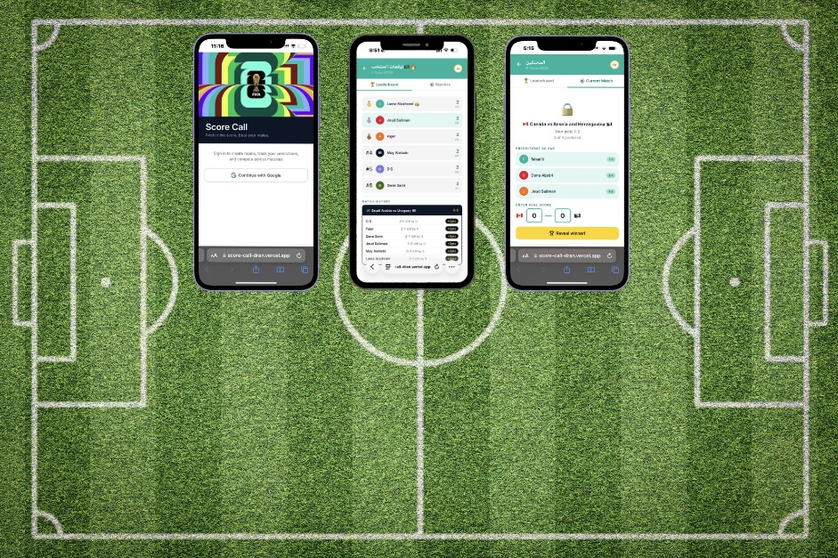

A World Cup 2026 score prediction game for groups — create a room, share a code, lock in your predictions, and watch your group leaderboard build across the whole tournament.
Growing up with my dad and siblings, I’ve been a fan of football since elementary school. During that time I (unfortunately) was a fan of Alnasser, remember taking pics with the players as well, ya never again. I fell off and larped a bit during high school, but eventually came back as a Real Madrid and Al-Ittihad fan (though Real Madrid holds a special place in my heart 🤍) I still remember cheering for Germany in the 2014 World Cup and actually watching them win, what a feeling
Since then, my siblings and I have run this fun little prediction game during La Liga matches (especially El Clásico, since my dad and I are Madridistas while my two brothers back Barça), Champions League games, and occasionally the Roshn Saudi League (sorry not sorry, it's not my favorite).
Before a match, we'd each make our score predictions, and whoever was closest (or spot-on) got treated to coffee or dinner by the rest.
That simple, engaging tradition sparked an idea: why not share this social experience with a broader audience?
So, right at the start of the 2026 World Cup, I built Score Call 🌍⚽️🏆
I was blown away when it gained over 60+ users in just 3 days. Now, my goal is to keep marketing it so football fans (and casual larpers, I haven't forgotten you) can keep the friendly banter going across every tournament to come.
The concept is simple: create a private room, share the code with your group, and everyone submits their score prediction for each match before it starts. Points are awarded based on how close your prediction is — 3 points for an exact score, 2 for the correct winner with a close score, 1 for the right winner. A running leaderboard tracks standings across the entire tournament.
Any user can create a private room and receive a short shareable code. Anyone with the code can join, submit their name, and start predicting. Rooms are isolated — your group's predictions and leaderboard are private.
Each match has a submission window that closes at kickoff. Once locked, predictions are frozen and cannot be edited. This creates the right amount of tension — you have to commit before the match starts, just like in real sports betting.
As match results are entered, the leaderboard updates in real time across all group members. The point system (3 pts exact, 2 pts close, 1 pt right winner) keeps the game competitive even when someone gets lucky with an exact score early on.